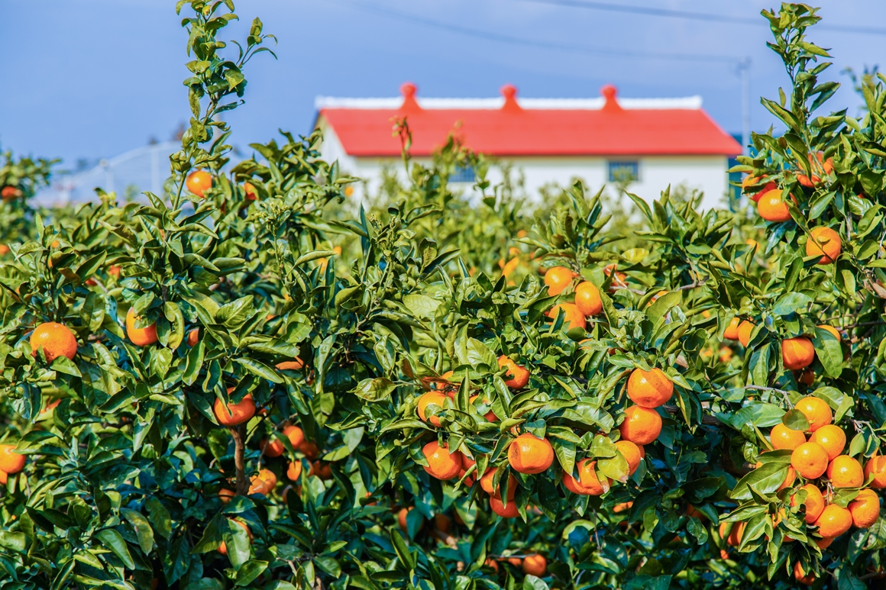

장소 상세보기
|  |
| 번호 | 5 |
|---|---|
| 분류 | 체험 |
| 장소 번호 |
A0005 |
| 장소명 | 감귤체험농장 |
| 장소 주요 설명 |
제주 겨울, 제일 먼저 떠오르는 모습은 시골 마을 돌담 위로 주렁주렁 매달린 잘 익은 주황빛의 감귤 아닐까? 예나 지금이나 제주의 겨울에 감귤이 빠질 수 없다. 조선시대 제주에 유배 왔던 추사 김정희는 자신의 유배가옥에 “귤중옥”이란 낭만 가득한 이름을 붙였다. “매화, 국화, 대나무는 서울에도 있지만 귤은 내가 사는 곳에만 있다. 귤을 속과 겉이 다 깨끗하다. 높은 지조와 향기로운 덕은 최고다”라는 말을 남겼다. |
| 장소 상세 설명 |
감귤이 제철인 겨울에는 감귤 체험과 감귤 카페를 찾는 여행객으로 북적인다. 동네 마을마다 특색 있는 포토존을 갖춘 감귤 체험농장이 많다. 귤모자 쓰고 감귤밭에서 찍는 사진 한장은 겨울 제주 여행에 빠질 수 없는 코스다. 감귤따기 체험을 하며 감귤을 원 없이 먹을 수 있고 내가 딴 감귤을 정해진 무게만큼 가지고 갈 수 있다. 귤밭 안에 테이블을 넣고 운영하는 이색 카페와 다양한 감귤 디저트 가득한 제주의 겨울은 귤만큼이나 새콤달콤하다. |